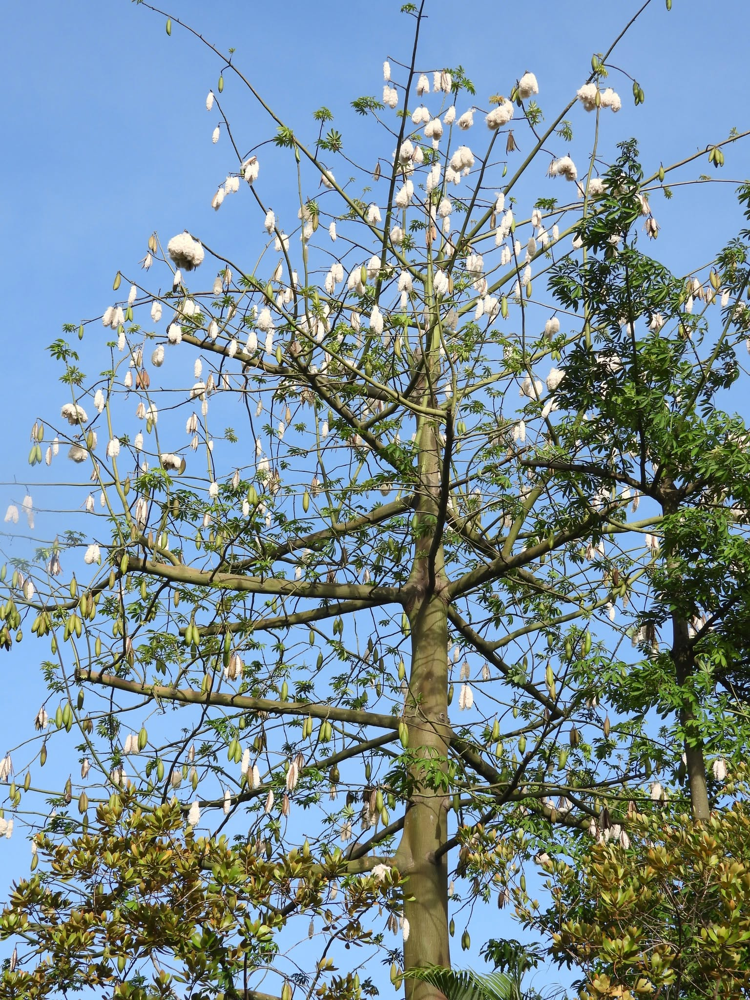

GOTS
Global Organic Textile Standard, scope covering cleaning, baling and trade of certified organic fibre.
We contract and support the groves, and we run the cleaning mill they deliver to. There is no spinning frame, no loom shed and no cut-and-sew floor behind this - the fibre leaves us as baled fill and goes to somebody who stuffs things with it.
Picking runs from late November into April. Cleaning follows the picking by a few days and finishes in May; the rest of the year is grove work, warehouse despatch and next season's contracting.
| Stage | What we run | Per season |
|---|---|---|
| Contracted grove | 640 smallholder families | 1,180 acres |
| Hand picking | 3–5 selective passes per tree | ≈ 3,600 MT as picked |
| Intake | Weighbridge and moisture meter | Lot by lot, not pooled |
| Drying & cleaning | Open yard drying, single cleaning point | - |
| De-seeding & cleaning | 4 cleaning lines, two shifts | ≈ 900 MT cleaned fill |
| Pressing | 1 bale press | ≈ 11,250 bales at 80 kg |
| Warehouse | Covered, ventilated, palletised | 3,000 bale capacity |
| Test bench | Bulk density rig, moisture and trash analyser | Every lot tested |
Cleaning outturn runs at about 25% - the rest is seed and shell, which goes back to the farms and the compost yard rather than into a trade we are not in.
The groves are not ours; they belong to the families who farm them. What we do is contract the crop before the season, pay a published premium, and provide the agronomy support the organic certificate depends on.

The crop is contracted before the season at a published price. The farms hold organic certification, inspected annually, and we buy the whole contracted crop rather than cherry-picking the good lots.
Instead of tillage and sowing, the annual cycle is pruning, mulching and canopy management. Soil is not turned over each season, so root systems and soil biology persist between harvests.
Rain-fed, with farmyard manure and botanical sprays only. Wide spacing leaves usable ground between trees, so pulses and millets are grown in the alleys - which spreads the family's risk across more than one harvest.
Bolls open unevenly, so trees are picked by hand over three to five passes. Pickers use cotton sacks, not synthetic ones - the single biggest source of contamination in this trade is the bag it was carried in.
Picked cotton is collected and moved to the mill the same week. Weighing happens on our bridge in front of the grower, and payment follows within 14 days, direct to a bank account.
Productivity is kept up by pruning back and eventually replacing individual trees - grove by grove, not field by field. The certified area never goes through a bare-soil phase.
The bolls open unevenly over weeks, so the same tree is picked three to five times. It is slower than shaking a tree out in one pass, and it is why so little shell and grit reaches the line.
The fastest way to separate fibre from seed and shell is to beat it hard. It is also the way to end up with a bale full of broken fibre and shell grit - the two complaints that come back down the line from every filling floor.
Our lines run gently and slowly, then de-dust and open the fibre so it arrives lofted rather than matted. It costs us throughput, and it is why the seed-and-shell figure on the docket is one we are willing to print.
Cleaned down between lots. The line is emptied and swept between lots. It costs us throughput, and it is the only way the figures on the offer match what is actually in the bale.

Weighed and moisture-checked as it arrives. Lots are stacked separately, never tipped into a common heap.
Yard drying to bring moisture into range, then a single cleaning point. Hand-picked cotton arrives clean, so we take out less and keep more of the fibre.
Two shifts through the season. Outturn is recorded per lot, which is the first number our certifier reconciles.
Pressed into 80 kg bales and numbered against the lot, so the test report that ships with them belongs to that fibre and no other.
Every lot goes across our own test bench before it is offered, so what you are quoted is a measurement rather than a description. The report travels with the bales.
For anything that needs third-party evidence - fibre identification, residues, restricted substances - we use accredited external laboratories and pass the report through unedited, including the results we would rather not have had.
| Test | How often | Where |
|---|---|---|
| Bulk density and loft recovery | Every lot | In-house |
| Seed, shell, dust and colour | Every lot | In-house |
| Moisture at intake and despatch | Every lot | In-house |
| Contamination check | Every bale, visual | In-house |
| Restricted substances | Seasonal | External lab |
| Fibre identification | Seasonal | External lab |
| Pesticide residue screening | Annual | External lab |
| Organic inspection | Annual, at farm level | Certification body |
Certificates are issued to us by independent bodies - we are a grower and a processor, not a certifier. Current scope certificates are available on request before you buy, and a transaction certificate ships with every order.
Global Organic Textile Standard, scope covering cleaning, baling and trade of certified organic fibre.
Organic Content Standard for the fibre we sell, with transaction certificates issued per shipment.
Farm-level organic certification on the contracted acreage, inspected annually by an accredited certifier.
Held on roughly 40% of our contracted acreage.
SEDEX SMETA four-pillar audit at the mill, plus our own quarterly labour checks in the groves during picking.
No product-safety or toy-safety marks - those belong on the finished article, and we do not make any. If you are filling toys or nursery goods, the testing is on your product, not on our bale.
A note on claims. Organic and Fairtrade claims belong to the certificate covering a specific lot, not to the company in general. Ask us for the transaction certificate for your order - if we cannot produce one, do not make the claim.
640 families under contract. We publish the premium paid over the state minimum support price each season, and payment is made within 14 days of intake, direct to bank accounts, with no commission agent in between.
96 permanent staff and about 240 seasonal workers at the mill through the cleaning months, 54% women, all on written contracts with statutory benefits and a canteen on site.
The groves are rain-fed - no irrigation is drawn for cotton on our contracted acreage. Ginning is a dry process, so the mill's own water use is domestic rather than industrial.
A 340 kW rooftop solar array covers about 40% of mill demand through the season. Shell waste and cotton stalk are composted and returned to the farms.